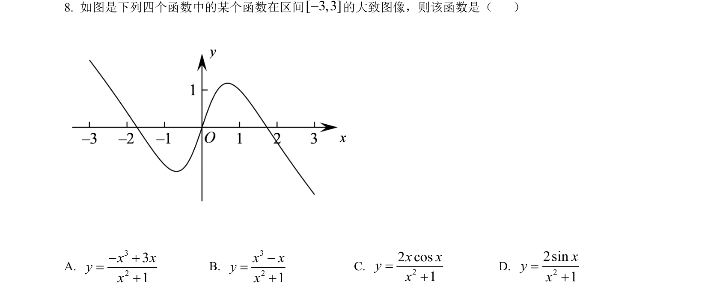
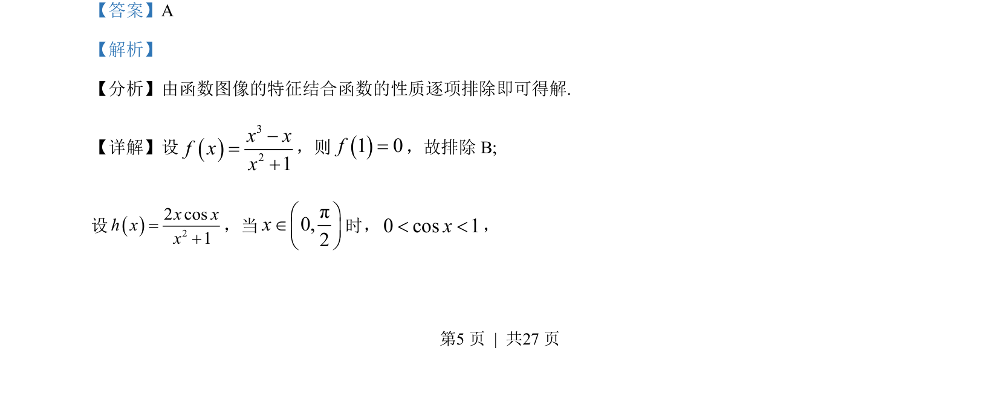
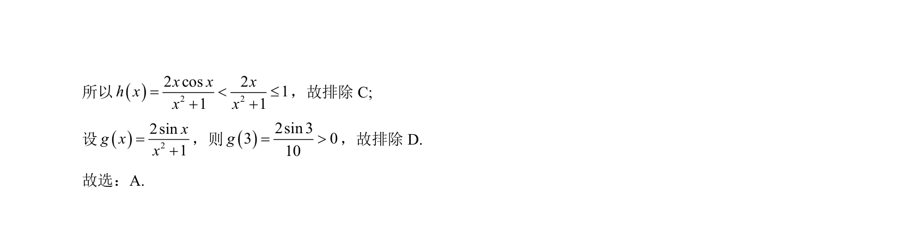

考点：函数图像 排除法 特殊值法 放缩法

本题通过函数性质（如特殊点函数值、不等式放缩）排除错误选项，识别函数图像。


📄 原 PDF 第 5 页：
素材/真题/吉林/2008-2024·（吉林）数学高考真题/2022年高考数学试卷（文）（全国乙卷）（解析卷）.pdf
【答案】A 【解析】 【分析】由函数图像的特征结合函数的性质逐项排除即可得解. 【详解】设321xxfxx-=+ ，则1 0f=，故排除 B; 设22 cos1x xh xx=+，当π0,2xæ öÎç ÷è ø 时，0 cos 1x< <，